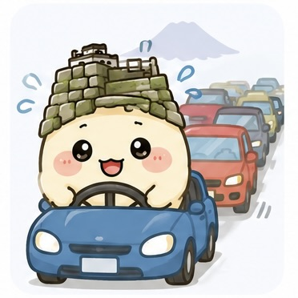
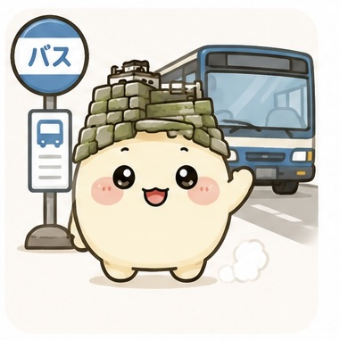
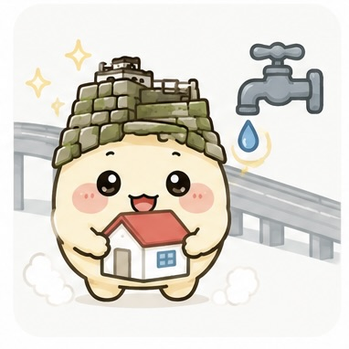

米子市民の声マップ
米子市民の声マップ 地図をクリックして声を投稿しよう！
地図をクリックして声を投稿しよう！
地図をクリックして声を投稿しよう！
地図をクリックして声を投稿しよう！
地図をクリックして声を投稿しよう！
地図をクリックして声を投稿しよう！
この声をYouTubeで討論しよう！
市民の声がどれだけ改善されたか
賛同数が多い声をランキング
実際に改善につながった声
いつ声が集まっているか
直近の注目エリア・テーマをピックアップ

本サイトは個人運営のシビックテックプロジェクトです。米子市役所および米子市とは一切関係ありません。
地図: © OpenStreetMap | 写真: Wikimedia Commons（CC BY-SA）
よなぼう
米子市民の声マップ 非公式マスコットキャラクター
米子城跡の石垣がモチーフ。国史跡にも指定された米子のシンボルを、帽子のようにちょこんと載せています。
皆生温泉に浸かったような温かいクリーム色のまるい体と、ピンク色に紅潮したほっぺが特徴です。
米子市内から眺められる大山のシルエット。米子にはないけど、いつも見守ってくれている存在です。
皆生温泉の湯気がふわふわ。どこにいても温泉気分のよな坊です。
みんなの声を8つのカテゴリで届けるよ！

🚗 交通・渋滞
🚃 公共交通
🏠 住環境